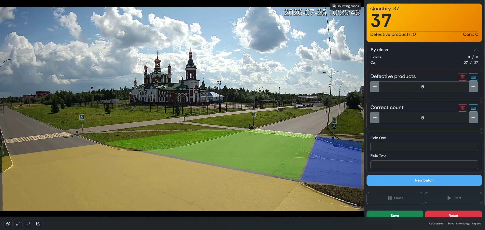

Counting in manufacturing and warehouses
Items on a conveyor, boxes at dispatch, aisle traffic — counting zones, batches, and reports in one web panel.
The shop-floor and warehouse problem
Lines and warehouses need accurate output, dispatch, and movement numbers. Manual tallies fail; closed industrial CV suites are often expensive, integrator-heavy, and push video to the cloud. You need local RTSP counting that shift operators can read.
How CVCounter helps in industry
Mount cameras over a conveyor, gate, or picking area, draw counting polygons, and set model classes (item, box, pallet, person). Tracking reduces double counts. Batches (“New batch”) and reports close the shift. Text and multi-counter views suit a monitor by the line without streaming video everywhere. Runs on your server — frames and camera URLs stay inside.
Where it fits
- Production conveyor — unit counting on a line section
- Warehouse and logistics — boxes, pallets, and dispatch zones
- Packing lines — shift batches with per-class totals
- Plant floors — people in a zone without a separate access-control client
- Site gates — vehicles and loading at entry/exit
Typical scenarios
Conveyor and line
A camera watches the product flow. A zone on the belt increments when an object passes; batch and total stay visible to the operator in a browser or kiosk by the machine.
Warehouse dispatch
Several zones: picking, doors, ramp. Multi-counters on one screen show in and out box counts without a separate app on every display.
Shift control
Start a new batch at shift start, save a report at the end. Metadata (line, shift, operator) uses form fields. History lives in the reports section.
Why it works on the plant floor
Open source (AGPL-3.0), Docker or Python install, YOLO / OpenCV / ONNX backends for your model. Multiple cameras from one panel, on-prem data, kiosk mode for the shop floor. It does not replace MES/WMS — it is a video counter you can plug into existing tally processes.
